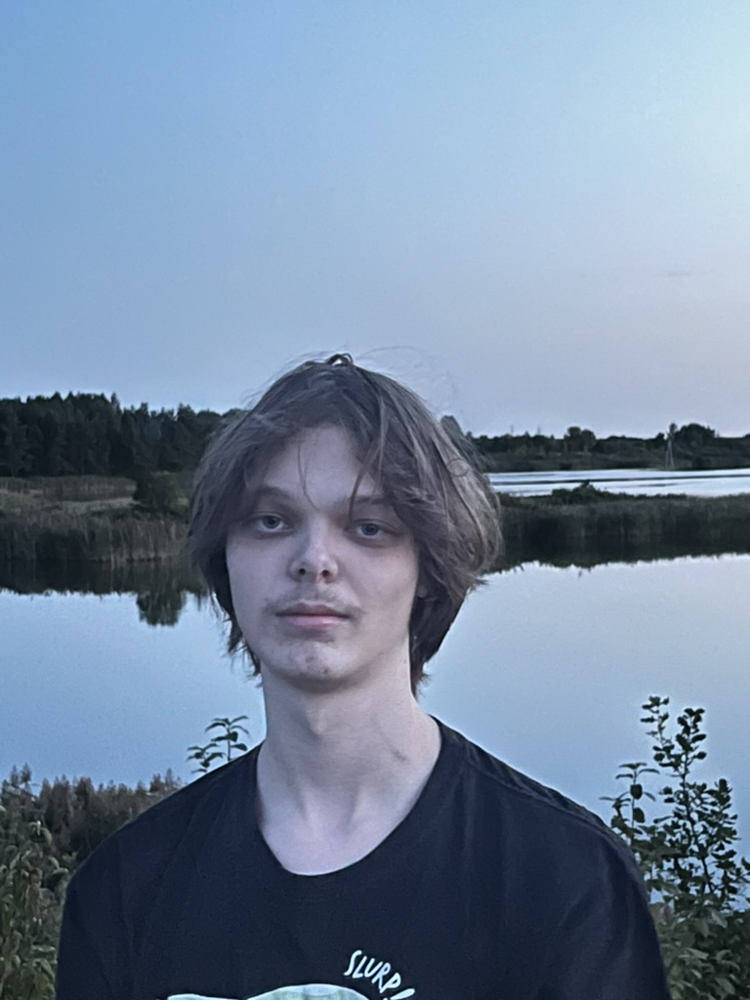

Kas mes tokie?
Mes esame Klaipėdos technologijų mokymo centro mokiniai ir nusprendėme įkurti mažą įmonę, kuri padės mums praktiškai pritaikyti įgytas žinias ir įgūdžius. Tai puiki galimybė mokytis realiomis sąlygomis, dirbti komandoje ir susipažinti su verslo pasauliu iš vidaus.
Musu komanda:

Artur Uvarov
Mokykloje pradėjau mokytis C++ ir Java, bet šios kalbos man pasirodė per sudėtingos, todėl kurį laiką praradau susidomėjimą programavimu. Vėliau atradau JavaScript – ji buvo aiškesnė, lankstesnė ir įdomesnė, todėl pradėjau ją mokytis.
Ką moku?
Galiu kurti interneto svetaines naudodamas MERN ir kitus „stack'us“. Moku sukurti prisijungimą, atsijungimą, administratoriaus skydelį ir kitą pagrindinę svetainės funkcionalumą. Taip pat naudoju Linux operacinę sistemą, Docker konteinerizavimui ir Git versijų valdymui.Ir kitus įrankius
